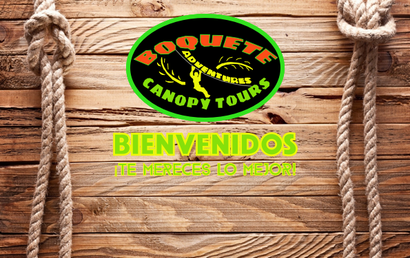

<div class="container">
  <div class="row"><div class="section" id="quienessomos">
    
    <p>
      Somos una pequeña empresa turística local, en donde te ofrecemos diferentes aventuras al aire libre, y nuestro mayor objetivo, es tu diversión.
    </p>
    
    <p>Ofrecemos diferentes actividades, tales como:</p>
<ul>
<li>Nuestro interesante Tour de Café</li>
<li>El exótico Tour de Avistamiento de Aves, con cientos de especies.</li>
<li>Tour a nuestros exuberantes y medicinales Pozos Termales.</li>
<li>Caminatas a hermosas cascadas.</li>
<li>Rappelling o descensos en cascadas.</li>
<li><strong>O si prefieres algo con más diversión y adrenalina, te ofrecemos el famoso Canopy Tour (Zip line o tirolina).</strong></li></ul>

Te damos la seguridad de que los guías y el equipo que utilizamos son de máxima seguridad y confianza. Nuestros cables de acero galvanizado soportan un peso máximo de 22.000 lbs (9.990 kg). Los arneses, mosquetones y poleas soportan un peso máximo de 2.000 lbs (910 kg). Y por supuesto, nuestros arboles centenarios de soporte para los cables son muy resistentes.
        </p></div>
        <div id="horario"><center> <h2><span><i class="material-icons">watch_later</i></span>HORARIO</h2></center>
        <p>
          <strong>Desde diciembre a junio</strong>, temporada de verano:
          - 8:30 am y 13:00 pm.</p>

          <p><strong>Desde julio a septiembre</strong>, temporada de clima variado con probabilidad de lluvias:
          - 8:30 am. y 13:00 pm.</p>

          <p><strong>Octubre y noviembre</strong>, temporada de invierno. Tours limitados por condiciones meteorológicas, contacta con nuestro Servicio de Atención al Cliente.</p>

          <p>En todos nuestros horarios, pueden haber cambios debido a nuestro clima tropical lluvioso.</p></div>
          <div id="ubicacion"><center><h2><i class="material-icons">add_location</i>UBICACIÓN</h2></center>
          <p>
            Nos ubicamos en las majestuosas faldas del Volcán Barú, rodeados de una exuberante zona de flora y fauna que bordea el Parque Internacional La Amistad, con una altitud de 1.840 metros sobre el nivel del mar</p>
            <div class="video-container">
              <iframe src="https://www.google.com/maps/embed?pb=!1m14!1m8!1m3!1d63085.04311781942!2d-82.4920386!3d8.8034261!3m2!1i1024!2i768!4f13.1!3m3!1m2!1s0x8fa5ebf0cfd4ad73%3A0xe3d4dcc9b03b7783!2sBoquete+Adventures+Canopy+Tours!5e0!3m2!1ses!2ses!4v1476813278279" width="600" height="450" frameborder="0" style="border:0" allowfullscreen></iframe>

            </div>
          </div>

          <center><h2>CONDICIONES Y TÉRMINOS</h2></center>
        <p>Requisitos mínimos para realizar la actividad:</p>
        <ul><li>- Peso máximo varones: 250 lbs (114 kg).</li>
  <li>- Peso máximo mujeres: 200 lbs (90 kg).</li>
  <li>- Edades: a partir de 5 años de edad hasta buenas condiciones físicas.</li>
  <li>- Jóvenes de entre 5 y 17 años de edad:</li>
  <ol>
    <li>1) Deben estar acompañados por un padre o tutor.</li></ol>
    <li>2) En el caso de no venir acompañado, deben llevar su identificación y tener firmado el consentimiento y documento de responsabilidad por un padre o tutor, puedes descargar el documento aquí.</li></ol>
    <li>- Toda persona que realice la actividad, debe tener firmado el consentimiento y documento de responsabilidad, puedes descargar el documento aquí.</li>

  <li>Recomendaciones:</li>
  <li>- Se recomienda calzado cerrado tipo deportivas o botas de montaña, pantalón largo, abrigos y repelente para insectos.</li>

  <li>Experiencia:</li>
  <li>- Para realizar esta actividad no se requiere ninguna experiencia previa, siga las instrucciones de nuestro personal, le resolverá cualquier cuestión que le surja y le ayudará a familiarizarse con el equipo especializado.</li>
  <li>- Nuestro personal comprobará con cada participante su capacidad para realizar el recorrido con seguridad.</li>

  <li>Obligaciones:</li>
  <li>- Cada participante debe aceptar y firmar el documento de responsabilidad, descargar el documento <a href="Consentimiento_y_documento_de_responsabilidad.pdf">aquí</a>.</li></ul></div>
</div>

</div>
